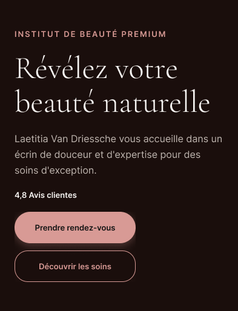
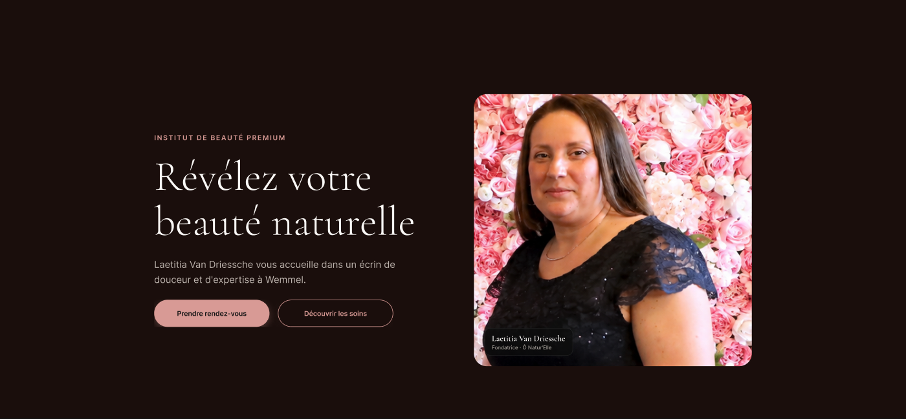
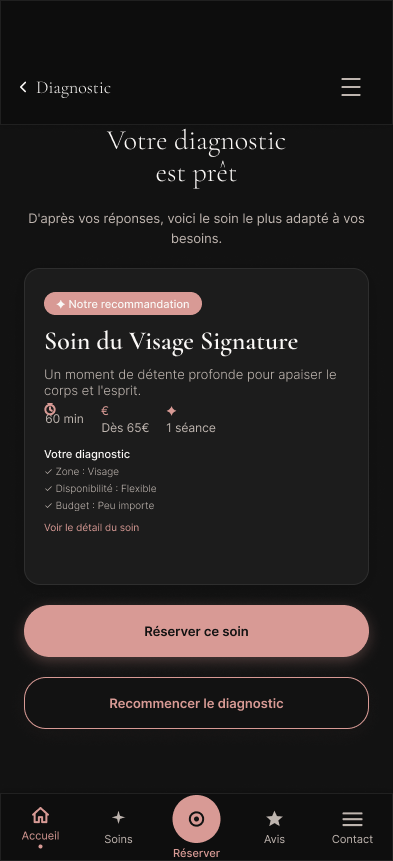
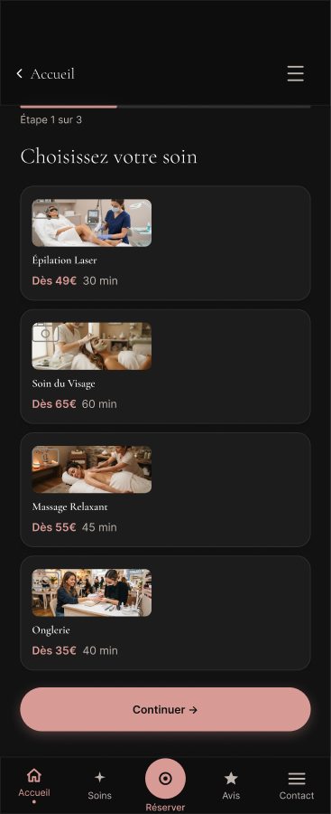
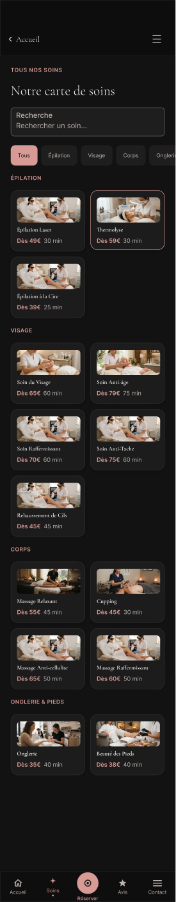

Ô Natur'Elle — un prototype complet pour un institut de beauté
Ô Natur'Elle est un institut de beauté premium fondé par Laetitia Van Driessche, esthéticienne diplômée installée à Wemmel, en Belgique. Pour ce projet client, j'ai conçu de bout en bout un prototype Figma complet et responsive — avec un fil conducteur simple : aider une cliente indécise à trouver le bon soin et à réserver sans friction.


Accueil, mobile et desktop — même message, densité d'information adaptée à chaque écran.
La démarche
Cinq étapes, de la première esquisse au prototype cliquable
Cadrage
Positionnement premium et chaleureux, pensé mobile-first : la majorité des clientes d'un institut de beauté réservent depuis leur téléphone, entre deux rendez-vous. L'architecture du site part de ce constat plutôt que de l'inverse.
Le diagnostic beauté
La fonctionnalité centrale du projet : un questionnaire en 4 étapes (zone à traiter, disponibilité, budget) qui recommande automatiquement le soin le plus adapté. L'objectif est de réduire l'indécision — souvent la vraie raison pour laquelle une visiteuse quitte un site de ce type sans réserver.

Résultat du diagnostic : une recommandation claire, justifiée par les réponses de la cliente.
La réservation
Un parcours en 3 étapes avec indicateur de progression visible à tout moment, un écran de chargement pendant la vérification de créneau, puis une confirmation animée (validation + confettis) — pour transformer une simple prise de rendez-vous en moment agréable plutôt qu'en formulaire administratif.

Étape 1 sur 3 : chaque étape affiche sa progression, jamais de formulaire à rallonge d'un coup.
Catalogue & boutique
Douze soins classés par catégorie (épilation, visage, corps, onglerie), chacun avec tarif et durée affichés dès la vignette, recherche et filtres. En complément, une boutique de cinq produits avec quick view, et une galerie avec visionneuse photo.

La carte des soins complète — recherche, filtres par catégorie, prix et durée visibles immédiatement.
Déclinaison desktop
L'ensemble du parcours a été redessiné pour grand écran plutôt que simplement agrandi : mise en page en deux colonnes sur l'accueil, gestion des états d'erreur du formulaire de contact, et pages légales (mentions légales, politique de confidentialité) et 404 prises en compte pour un prototype réellement complet.
Design visuel
Du wireframe à l'interface finale
Le processus visuel du projet : wireframes basse fidélité, maquettes haute fidélité et design system.
Wireframes basse fidélité utilisés pour valider la structure d'Ô Natur'Elle avant d'investir dans le détail visuel.
Maquettes haute fidélité incluant micro-copie, couleurs de marque et hiérarchie typographique finale.
Titre — Fraunces 600
Accent — Fraunces italic
Texte courant — Hanken Grotesk, 16px, line-height 1.6
ANNOTATIONS — IBM Plex Mono
Extrait du design system utilisé pour Ô Natur'Elle : palette, échelle typographique et composants documentés dans Figma.
User Research
Comprendre avant de concevoir
Avant de commencer la conception des premières maquettes, il était nécessaire de comprendre les attentes réelles des futures utilisatrices — pour éviter de concevoir une solution basée sur des hypothèses plutôt que sur des données concrètes. Un questionnaire a été diffusé auprès de 24 personnes correspondant au public cible potentiel d'Ô Natur'Elle.
À première vue, le téléphone apparaît comme le moyen dominant. Mais une analyse plus fine montre qu'il sert surtout à compenser un manque d'information disponible en ligne : quand les prix sont absents ou qu'aucune photo n'est disponible, la cliente se tourne vers l'appel pour obtenir les réponses qui lui manquent.
Trois participantes sur quatre manifestent un intérêt pour une aide au choix du soin — cette donnée a justifié directement le développement du diagnostic personnalisé intégré au projet.
Profil
Représente la majorité des répondantes ayant moins de 35 ans. Utilise quotidiennement de nombreux services numériques et réalise la plupart de ses réservations directement via son smartphone. Elle s'attend à retrouver le même niveau de simplicité lorsqu'elle réserve un soin esthétique.
Objectifs
- Réserver rapidement
- Comparer facilement les prestations
- Voir les prix immédiatement
Frustrations
- Les prix cachés
- Les formulaires trop longs
- Les appels obligatoires
Impact sur le design
Réservation en trois étapes, Mobile First, prix visibles immédiatement, CTA de réservation mis en avant.
Profil
Représente les répondantes de plus de 35 ans. Utilise le numérique mais conserve des habitudes plus traditionnelles ; se montre plus prudente face à un nouvel établissement. Son comportement est fortement influencé par la confiance.
Objectifs
- Être rassurée avant de réserver
- Voir des photos réelles
- Obtenir des infos fiables
Frustrations
- Absence de photos
- Paiement obligatoire avant visite
- Sites peu professionnels
Impact sur le design
Galerie avant/après, photos de l'institut, avis clients, absence de paiement en ligne, présentation de Laetitia.
Pense
- Je veux gagner du temps.
Ressent
- Impatience, frustration si c'est lent.
Voit
- Des interfaces optimisées mobile.
Dit
- « J'aime faire tout depuis mon téléphone. »
Fait
- Réserve directement en ligne.
Pain points
- Appels obligatoires, prix cachés.
Protocole prévu pour Ô Natur'Elle
- Objectif : vérifier qu'une cliente indécise arrive, via le diagnostic beauté, jusqu'à une réservation confirmée sans blocage.
- Participants : 5 personnes, dont des clientes régulières d'instituts de beauté.
- Méthode : test modéré à distance sur le prototype Figma, pensée à voix haute, parcours diagnostic → réservation.
- Métriques : taux de complétion, temps par étape, clarté perçue de la recommandation du diagnostic.
- Restitution : liste des irritants priorisés, avant passage en développement.
Structurer l'expérience
User Flow & architecture de l'information
L'analyse du questionnaire a mis en évidence deux types de comportements distincts : certaines clientes savent immédiatement quel soin réserver, d'autres hésitent et ont besoin d'être accompagnées. Deux parcours ont donc été conçus, qui convergent vers la même réservation.
Lorsqu'une utilisatrice termine le diagnostic, elle est directement redirigée vers l'étape 2 de la réservation (date et heure) sans devoir recommencer le choix du soin — le diagnostic a déjà effectué cette étape pour elle.
Pourquoi cette structure ? Deux chemins mènent à la réservation : un direct pour les clientes qui savent déjà quel soin elles veulent, un guidé via le Diagnostic pour celles qui hésitent — le cas le plus fréquent d'après le questionnaire.
Le Simulateur reste sur l'Accueil plutôt que sur une page à part : c'est un outil de découverte, pas une étape du parcours de réservation. Produits, Galerie et Contact restent accessibles depuis la navigation principale, sans jamais interrompre le parcours de réservation.
Conception d'interaction
Des micro-interactions qui donnent du feedback
Chaque interaction doit répondre à une action utilisateur de façon immédiate et compréhensible. Voici quelques principes appliqués sur ce projet, à tester ci-dessous.
Feedback de bouton
Retour visuel instantané pour confirmer qu'une action a été prise en compte.
Champ de formulaire
Validation en temps réel avec message d'erreur clair et constructif.
Saisissez une adresse valide pour voir la validation en direct.
Interrupteur accessible
Composant toggle avec état visible, libellé explicite et support clavier complet.
Chargement progressif
Indicateur de progression pour rassurer l'utilisateur pendant une attente.
Prêt.
Et ensuite
Prochaine étape : tester avec de vraies clientes
Le prototype est complet mais pas encore testé en conditions réelles. La prochaine étape consiste à faire passer le parcours diagnostic → réservation à 5 clientes régulières d'instituts de beauté, avant de transmettre le projet au développement.